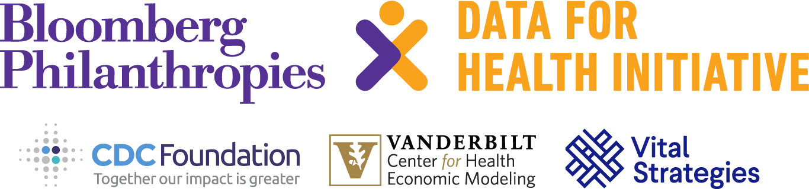

Decision Modeling for Health Economic Evaluation
Cebu, Philippines 2026

Before you Arrive
Due to the workshop only being 5 days, we kindly ask that you do some pre-work before arriving to the workshop to ensure that you are able to make ample progress on your capstone.
Schedule
Download All Lecture Slides as a ZIP file [NEEDS UPDATED]
26/01/2026 (Monday)
| Time | Type | Topic |
|---|---|---|
| 08:00 - 8:45 | Check-Ins | Registration and Introductions |
| 08:45 - 9:30 | Lecture | Conceptual and Theoretical Foundations for Decision Analysis and Cost Effectiveness Analysis |
| 10:00 - 10:30 | Case Study | Introduction to Topic |
| 10:30 - 10:50 | Break | Coffee/Tea |
| 10:50 - 12:00 | Lecture | Decision Trees |
| 12:30 - 13:40 | Break | Lunch |
| 13:40 - 13:55 | Capstone | Intro to Capstone |
| 13:55 - 14:55 | Capstone | Discuss Decision Problem [Small Groups] |
| 14:55 -15:40 | Case Study | Introduction to AMUA |
| 15:40-16:30 | Lecture | CEA Fundamentals 1: Costs |
| 16:30 | Check-Ins | Daily Recap & Discussion |
27/01/2026 (Tuesday)
| Time | Type | Topic |
|---|---|---|
| 08:00 - 09:00 | Case Study | Decision Trees in Amua |
| 9:00 - 10:30 | Capstone | Make a Decision Tree |
| 10:30 - 11:30 | Break | Coffee/Tea |
| 11:30 - 12:30 | Lecture | CEA Fundamentals 2:QALYs |
| 12:30 - 13:40 | Break | Lunch |
| 13:40 - 14:45 | Lecture | CEA Fundamentals 2:DALYs |
| 14:45 - 16:00 | Lecture | CEA Fundamentals 3: Incremental CEA |
| 16:00 - 16:30 | Capstone | Add Outcomes to your decision tree |
| 16:30 | Check-Ins | Daily Recap |
28/01/2026 (Wednesday)
| Time | Type | Topic |
|---|---|---|
| 08:00 - 09:00 | Case Study | Incremental CEA |
| 09:00-10:00 | Lecture | Markov Models |
| 10:45 - 11:15 | Break | Coffee/Tea |
| 11:15 - 12:30 | Lecture | Likelihood Metrics - Rates & Probabilities |
| 12:30 - 13:40 | Break | Lunch |
| 13:40 - 14:45 | Case Study | Alive-Dead Markov Model in Amua |
| 14:45 - 16:30 | Capstone | Start Markov Model |
| 16:30 | Check-Ins | Daily Recap and Group Discussion |
29/01/2026 (Thursday)
| Time | Type | Topic |
|---|---|---|
| 08:00 - 10:20 | Lecture | Lecture: Structuring the Markov Model [JG] |
| 10:15 - 10:30 | Break | Coffee/Tea |
| 10:30- 12:30 | Case Study | Case Study: Progressive Disease Model in Amua |
| 12:30 - 13:40 | Break | Lunch |
| 13:40 - 14:45 | Lecture | Determinisitic, Threshold and Scenario Analyses |
| 14:45 - 16:00 | Capstone | Run CEA and Stop work on Model to complete slides |
| 16:00 | Check-Ins | Daily Recap |
30/01/2026 (Friday)
| Time | Type | Topic |
|---|---|---|
| 08:00 - 09:00 | Case Study | DALYs in AMUA [Guided] |
| 09:30 - 10:15 | Lecture | Common CEA Errors |
| 10:15 - 10:45 | Break | Coffee/Tea |
| 10:45 - 12:30 | Presentations | Capstone Presentations Session 1 |
| 12:30 - 13:45 | Break | Lunch |
| 13:45 - 15:00 | Presentations | Capstone Presentations Session 2 |
| 15:00 | Farewell | Certificate Ceremony and Closing Discussion |
Optional Content
| Time | Type | Topic |
|---|---|---|
| Asynchronous | Lecture: | PSA Analysis |
| Asynchronous | Case Study: | PSA Analysis |